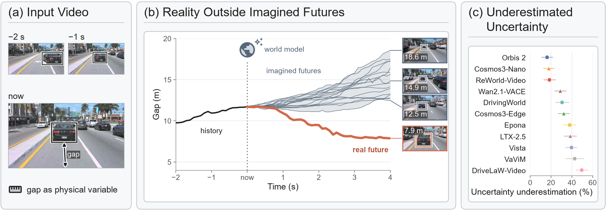
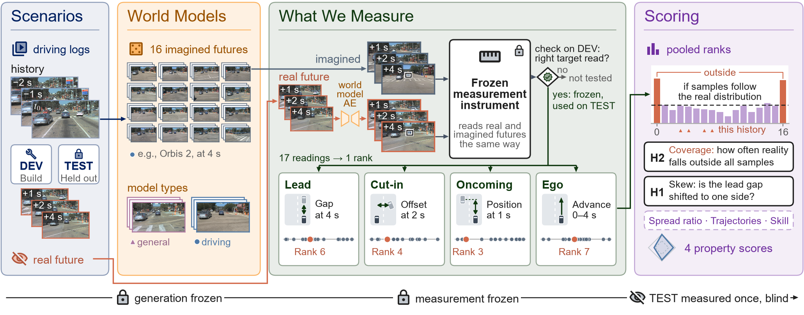
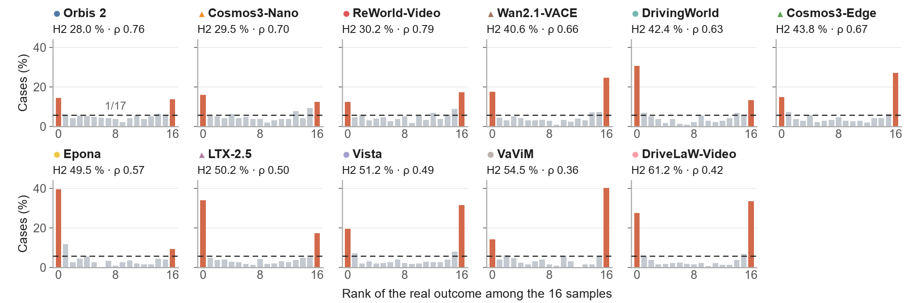
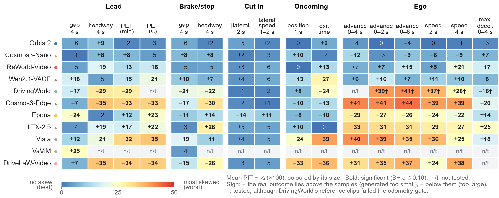

Are Driving Video World Models Aligned with Real-World Odds?
Department of Civil and Environmental Engineering, University of Wisconsin–Madison
*Corresponding author

Every model underestimates its uncertainty. The real outcome falls outside all 16 samples in 28–61% of cases, 2.4 to 5.2 times the 11.8% expected under alignment, and every spread ratio lies below 1.
Five models are skewed, in opposite directions. Epona and DrivingWorld place the lead vehicle too far ahead, and VaViM, Wan2.1-VACE and Vista too close. The largest skew is in the ego motion.
Informative samples can still miss the real distribution. Nine models beat climatology, yet none follows the real distribution, and among these models neither type nor scale predicts which comes closest.
Testing the odds on real driving data is hard for three reasons. DriveOddsBench answers each, and the three answers meet in one pipeline.

Each recorded history has only one real future, so the true probabilities are unknown. If the samples follow the real distribution, the rank of the real outcome among them is uniform in every history, so pooled ranks test them without probability labels.
uniform on {0, …, 16} if alignedReading errors can look like model errors. One validated instrument reads the same quantities, such as the lead-vehicle gap and the ego motion, from the generated futures and from the real future, which first passes through the world model's autoencoder.
one frozen instrumentThe many possible analyses invite selective reporting. All confirmatory analyses were frozen before any test clip was measured.
pre-registered H1 and H2Under alignment the real reading falls outside the range of all 16 samples in 2/17 = 11.8% of cases. More often means that the model underestimates its uncertainty.
A skewed model places its samples to one side of reality; H1 tests the mean PIT of the lead gap at 4 s.
The mean distance between two samples over the mean distance from a sample to reality is 1 under alignment for any number of samples.
Two short videos of about 1.5 minutes each: Part 1 shows the pipeline, and Part 2 works through one test history.
How one recorded future per history tests a world model: 16 imagined futures, the real future through the model's autoencoder, one frozen instrument, the rank of reality, pooled ranks and two pre-registered tests.
One test history worked through: Orbis 2 imagines 16 futures, the lead car is at least 12.5 m ahead in all of them, and in reality it braked to 7.9 m.
TEST: 200 held-out Argoverse 2 histories in five scenario families, 16 samples per history.
| Model | Type | Outside all 16 samples (%)11.8 if aligned | Spread ratio1 if aligned | Lead-gap skewmean PIT − ½ | CRPS skill vs. climatology (%)above 0: better |
|---|---|---|---|---|---|
| Orbis 2 | driving | 28.0 | 0.76 | +0.056 | 56 |
| Cosmos3-Nano | general | 29.5 | 0.70 | −0.008 | 45 |
| ReWorld-Video | driving | 30.2 | 0.79 | +0.051 | 37 |
| Wan2.1-VACE | general | 40.6 | 0.66 | +0.177 | 34 |
| DrivingWorld | driving | 42.4 | 0.63 | −0.169 | 18 |
| Cosmos3-Edge | general | 43.8 | 0.67 | −0.066 | 6 |
| Epona | driving | 49.5 | 0.57 | −0.238 | 26 |
| LTX-2.5 | general | 50.2 | 0.50 | −0.039 | 30 |
| Vista | driving | 51.2 | 0.49 | +0.120 | −17 |
| VaViM | driving | 54.5 | 0.36 | +0.249 | −30 |
| DriveLaW-Video | driving | 61.2 | 0.42 | +0.072 | 12 |
Sorted by the outside rate (H2). Orange: confirmed skew (H1). A positive skew means that the generated lead gaps are too small, a negative skew that they are too large.


@article{liu2026driveoddsbench,
title = {DriveOddsBench: Are Driving Video World Models Aligned with Real-World Odds?},
author = {Liu, Jiaxi and Wu, Keshu and Ran, Bin and Li, Xiaopeng},
journal = {arXiv preprint},
year = {2026}
}